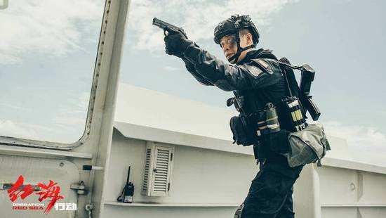
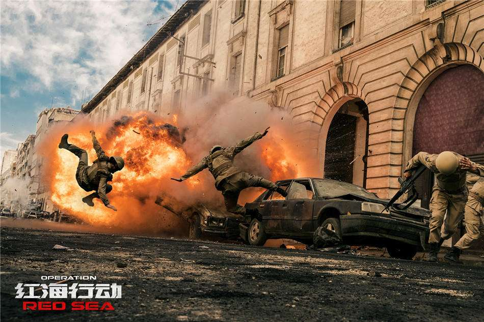
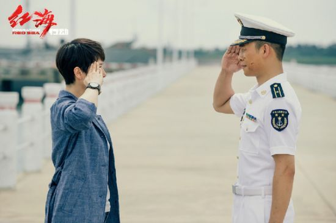

《红海行动》是由博纳影业集团股份有限公司、中国人民解放军海政电视艺术中心等出品，
林超贤执导、冯骥、陈珠珠、林明杰编剧，张译、黄景瑜、海清、杜江、蒋璐霞等主演的
动作片。
该片讲述了中国海军“蛟龙突击队”八人小组奉命执行撤侨任务，突击队兵分两路进行救援，
但不幸遭遇到伏击，人员伤亡；同时在粉碎叛军武装的 惊天阴谋中惨胜的故事。
该片于2018年2月16日在中国内地上映；3月1日在中国香港上映。
  
张译饰演杨锐
队长杨锐，带着包括狙击手顾顺、爆破手徐宏、重炮手佟莉等8名战友完成任务，当中受了不少苦。

海清饰演夏楠
夏楠是法籍战地记者，对中国海军“蛟龙突击队”执行撤侨任务遭遇恐怖分子突袭事件进行跟踪报道